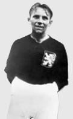

A Copa do Mundo FIFA de 1934 foi a segunda Copa do Mundo FIFA, o campeonato mundial entre seleções masculinas
de futebol. Teve lugar na Itália de 27 de maio a 10 de junho.Esta Copa do Mundo foi a primeira à qual as
equipes tiveram de se classificar para participar. 32 nações
entraram para a competição e, depois das eliminatórias, 16 seleções participaram do torneio definitivo. O
então campeão Uruguai não quis participar em represália as seleções europeias que quatro anos antes nāo
quiseram ir a sua copa em 1930. A Itália se tornou a segunda campeã mundial, derrotando a Tchecoslováquia
por 2 a 1 na final.Após o grande sucesso da primeira edição da Copa do Mundo, no Uruguai, as equipes
voltaram a se reunir em um país-sede afim de saber qual a nação mais poderosa no esporte que começava a
dominar o planeta.
Após a desistência da Suécia, a Itália, após muita discussão política na já existente e polêmica Fifa, foi a
nação escolhida para sediar o Mundial. Diferente de quatro anos antes, a competição foi organizada com
países classificados e não convidados. Até por isso, e divergências políticas, o atual campeão Uruguai foi
ausente no certame.
Sem fase de grupos, o Mundial já começou diretamente nas oitavas de final e é a única onde os oito melhores
foram todos europeus. O cenário era bem diferente do conhecido atualmente.
A Copa do Mundo de 34, que promoveu o triunfo italiano, também foi palco de mais uma decepção brasileira.
Assim como aconteceu quatro anos antes, o selecionado canarinho voltou a protagonizar um grande fiasco.
seleção brasileira embarcando para o mundial
Sem nenhum jogo de preparação, com nove atletas do Botafogo e mais um vexame na conta, o selecionado
brasileiro logo deu adeus ao Mundial após a derrota por 3 a 1 para a forte seleção da Espanha. Leônidas
marcou o único gol tupiniquim na competição, enquanto Iraragorri e Lángara marcaram para os espanhóis.
34 países quiseram entrar no torneio, então partidas eliminatórias foram requeridas para enxugar para 16
equipes. Ainda assim, houve várias ausências notáveis. O então campeão Uruguai optou por não participar,
em protesto pela recusa de várias seleções europeias de irem à América do Sul para a Copa anterior, a qual o
Uruguai sediou. Como resultado, a Copa de 1934 é a única na qual o campeão anterior não participou. Os
britânicos, em exílio autoimposto em relação à FIFA, também se recusaram a participar. A visão do membro do
comitê da FA Charles Sutcliffe foi: "as associações nacionais da Inglaterra, Escócia, Gales e Irlanda têm
mais o que fazer no seu próprio campeonato internacional, o qual, para mim, é muito melhor do que um
Campeonato Mundial sediado em Roma".
Apesar de ser sede, a Itália teve que se classificar, a primeira e única vez que o país-sede não teve
classificação automática. As partidas eliminatórias foram arranjadas em uma base geográfica. Desistências
de Chile e Peru colocaram Argentina e Brasil na Copa sem jogar um único jogo.
Doze das 16 vagas foram distribuídas pela Europa, três para as Américas e um para Ásia ou África (incluindo
Turquia). Somente dez das 32 equipes participantes e quatro das 16 classificadas (Brasil, Argentina, Estados
Unidos e Egito) eram de fora da Europa. A última vaga do torneio foi decidida entre Estados Unidos e México
a apenas três dias do início do torneio em uma partida única em Roma, a qual os EUA venceram.
A maioria das 16 equipes estavam estreando em uma Copa. Incluem-se nove das doze europeias (Itália,
Alemanha, Espanha, Holanda, Hungria, Tchecoslováquia, Suécia, Áustria e Suíça) e o Egito. O Egito foi a
primeira seleção africana a participar de um Copa do Mundo, e não voltaria a se classificar até a próxima
Copa na Itália, em 1990.
Disputas internas fizeram com que a seleção da Argentina não tivesse nenhum dos jogadores finalistas da Copa
passada. Contra a Suécia, em Bolonha, a Argentina ficou duas vezes à frente no placar, mas dois gols de Sven
Jonasson e um de Knut Kroon deram a vitória à Suécia por 3 a 2. Seus parceiros sul-americanos do Brasil
também sofreram uma eliminação precoce. A Espanha os derrotou confortavelmente por 3x1.
Pela única vez em uma Copa do Mundo, as oito melhores seleções foram europeias - Áustria, Alemanha,
Tchecoslováquia, Espanha, Hungria, Itália, Suécia e Suíça. Todas as quatro equipes não-europeias foram
eliminadas na primeira rodaFoi nas quartas-de-final que a primeira partida refeita na história das Copas teve
lugar, quando a Itália e
Espanha empataram em 1 a 1 depois da prorrogação. A partida foi disputada de uma maneira grosseira, com muitos
jogadores machucados de ambos os lados: uma jogada dura machucou o goleiro espanhol Ricardo Zamora na primeira
partida, deixando-o impossibilitado de participar da partida-desempate, enquanto que, do outro lado, uma jogada
dura dos espanhóis quebrou a perna do italiano Mario Pizziolo, que não iria jogar mais pela sua seleção. A
partida também ficou marcada pela atuação memorável de Zamora, que, mesmo machucado, fazia defesas milagrosas,
numa das melhores atuações de um goleiro. No jogo-desempate,a Itália bateu por 1 a 0 a Espanha (sem Zamora,
impedido de atuar pela lesão contraída na primeira partida, que foi agravada pelo esforço de continuar e ainda
fazer grandes defesas). Gol do craque italiano Giuseppe Meazza, em cabeçada indefensável para o goleiro Joan
Josep Nogués, em lance de muita malandragem: embora não lhe faltasse impulsão apesar da baixa estatura,
apoiou-se nas costas de um colega para conseguir cabecear. Os italianos foram tão brutos, que, pelo menos,
três jogadores espanhóis tiveram que deixar o campo machucados.
As semifinais eram: Itália X Áustria e Tchecoslováquia x Alemanha.
Itália e Áustria (o Wunderteam/Time-Maravilha) eram as melhores equipes do torneio, e a imprensa dizia que o
vencedor da partida certamente seria o campeão. O jogo opunha o craque italiano Giuseppe Meazza e o astro
austríaco Matthias Sindelar. No jogo, os austríacos se deram mal: a forte chuva ocorrida na véspera e no dia da
partida prejudicou o rápido toque de bola da equipe[18] O time perdeu muito também com a truculenta marcação de
Luis Monti sobre Sindelar[19] cuja única oportunidade de gol na partida ocorreu aos 33 minutos do segundo tempo,
quando chutou para fora após ficar de frente para o goleiro Gianpiero Combi. Naquela altura, o jogo já
estava 1 a 0 para a Itália, um gol de Enrique Guaita que originou bastante reclamação dos austríacos, que
alegaram uma possível falta no lance. Ao final do jogo, a Squadra Azzura venceu por 1 a 0 e foi à final. Na
outra semifinal, numa partida considerada "inferior'' pela imprensa, a Tchecoslováquia bateu a Alemanha por
3 a 1
O Estádio Nacional do Partido Nacional Fascista foi o palco da final. A Tchecoslováquia depositava sua esperança
no artilheiro Oldřich Nejedlý e no grande goleiro František Plánička. A Azzura contava com o mando de campo, com
o craque Meazza (que depois viria a ser eleito o craque da copa) e com o fato de seu time ser bem superior
tecnicamente que a Tchecoslováquia. II Duce Benito Mussolini estaria no estádio, ao mesmo tempo para intimidar
os tchecoslovacos e garantir que os italianos dessem o máximo em campo, ou "arcariam com as consequências''. Com
80 minutos jogados, para desespero do ditador e descrença da imprensa, a Tchecoslováquia liderava o placar por 1
a 0, gol de Antonín Puc. Porém, 1 minuto depois, Raimundo Orsi empatou a partida após lance polêmico: o meia
Giovanni Ferrari dominou a bola com o braço pela meia esquerda no ataque italiano, gerando desde logo reclamação
dos tchecoslovacos A jogada prosseguiu com ele encontrando na linha lateral da grande área Orsi, que driblou
o marcador e conseguiu chutar no canto direito de Plánička Os tchecoslovacos reclamaram bastante e o árbitro
sueco Ivan Eklind resolveu consultar o auxiliar, mas este confirmou que o lance teria sido normal. A partida
foi para a prorrogação. A Azzurra lançou-se ao ataque e virou aos cinco minutos do primeiro tempo. A defesa
tcheca perdeu uma bola dividida que custaria caro: ao ganhar o lance, Enrique Guaita tocou para Angelo Schiavio,
que chutou quase do bico da grande área quando o zagueiro Josef Čtyřoký chegava para tentar interceptar. O chute
saiu prensado, fazendo a bola encobrir Plánička, que se agachara para defender uma bola que normalmente viria
rasteira Depois da virada, a Itália se trancou na defesa e só esperou o apito final. Ao final do jogo, os
italianos podiam comemorar sua primeira Copa do Mundo. O técnico Pozzo e os jogadores italianos ficaram muito
aliviados por terem conseguido cumprir a missão dada por Mussolini. Lamentavelmente, a Copa havia virado um
palco para promoção de um regime ditatorial que mais tarde viria a causar muitas mortes.
No fervor do fascismo, a Azzurra triunfa
Sediando e já com sinais do gigantismo no futebol, a Itália utilizou a força de sua torcida, o exagerado
nacionalismo político com o fervente fascismo de Benito Mussolini e o ídolo eterno Giuseppe Meazza para
conquistar seu primeiro título.
Sim, Giuseppe Meazza é o personagem que dá nome ao templo do futebol San Siro, casa de Inter e Milan. E
também foi o principal nome da competição, regendo o meio-campo italiano ao título.
Com uma campanha de quatro vitórias, um empate, empate levava o duelo ao jogo-extra no dia seguinte, com 12
gols feitos e apenas três sofridos, a Itália sobrou e venceu a Copa após bater a então Tchecoslováquia
prorrogação.
O Estádio Nacional do Partido Nacional Fascista foi o palco desta decisão. A Tchecoslováquia depositava sua
esperança no artilheiro Oldřich Nejedlý e no grande goleiro František Plánička. A Azzura contava com o mando
de campo, com o craque Meazza e com o fato de seu time ser bem superior tecnicamente que a
Tchecoslováquia.
Nas arquibancadas, II Duce Benito Mussolini compareceu para intimidar os tchecoslovacos e, ao mesmo tempo,
garantir que os italianos dessem o máximo em campo, ou "arcariam com as consequências'', como o mesmo
declarou em carta enviada à delegação italiana durante a competição.
Para apreensão do ditador, a Tchecoslováquia liderou o placar por 1 a 0, gol de Antonín Puc. Porém, logo na
sequência, Raimundo Orsi empatou a partida após lance polêmico.
O meia Giovanni Ferrari dominou a bola com o braço pela meia esquerda no ataque italiano, gerando desde logo
reclamação dos tchecoslovacos. A jogada prosseguiu com ele encontrando na linha lateral da grande área Orsi,
que driblou o marcador e conseguiu chutar no canto direito de Plánička
A partida foi para a prorrogação. A Azzurra se lançou ao ataque e virou aos cinco minutos do primeiro tempo.
A defesa tcheca perdeu uma bola dividida que custaria caro: ao ganhar o lance, Enrique Guaita tocou para
Angelo Schiavio, que chutou quase do bico da grande área quando o zagueiro Josef Čtyřoký chegava para tentar
interceptar. O chute saiu prensado, fazendo a bola encobrir Plánička,
Depois da virada, a Itália se trancou na defesa e só esperou o apito final. Ao final do jogo, os italianos
podiam comemorar sua primeira Copa do Mundo. O técnico Pozzo e os jogadores italianos ficaram muito
aliviados por terem conseguido cumprir a missão dada por Mussolini. Lamentavelmente, a Copa havia virado um
palco para promoção de um regime ditatorial que mais tarde viria a causar muitas mortes.
italianos comemorando seu primeiro tituloitalia campeã de 1934
tabela de jogos da copa de 1934
Fase 1
data
time A
time B
Local
27 de maio
Italia
7
x
1
Estados unidos
Roma
27 de maio
Espanha
3
x
1
Brasil
Genova
27 de maio
Austria
3
x
2
Franca
Turim
27 de maio
Hungria
4
x
2
Egito
Napoles
27 de maio
Tchecoslovaquia
2
x
1
Romenia
Trieste
27 de maio
Suica
3
x
2
Holanda
Milao
27 de maio
Alemanha
5
x
2
Belgica
Florenca
27 de maio
Suecia
3
x
2
Argentina
Florenca
quartas-de-final
data
time A
time B
Local
31 de maio(1 de junho)
Italia
1(1)
x
1(0)
Espanha
Florenca
31 de maio
Austria
2
x
1
Hungria
Bolonha
31 de maio
Tchecoslovaquia
3
x
2
Suica
Turim
31 de maio
Alemanha
2
x
1
Suecia
Milao
Semifinal
data
time A
time B
Local
3 de junho
Italia
1
x
0
Austria
Milao
3 de junho
Tchecoslovaquia
3
x
1
Alemanha
Roma
disputa do terceiro lugar
data
time A
time B
Local
7 de junho
Alemanha
3
x
2
Austria
Napoles
Grande Final
10 de junho
Italia
2
x
1
Tchecoslovaquia
Roma
artilharia
OldřichNejedlý:5 gols

jogador
numero de gols
selecao
OldřichNejedlý
5
Tchecoslovaquia
Edmund Conen
4
Alemanha
Angelo Schiavio
4
Italia
Raimundo Orsi
3
Italia
Leopold Kielholz
3
suiça
Bernard Voorhoof
2
Belgica
Johann Horvath
2
Austria
Antonín Puč
2
Tchecoslovaquia
Abdel Fawzi
2
Egito
Karl Hohmann
2
Alemanha
Ernst Lehner
2
Alemanha
Géza Toldi
2
Hungria
Giovanni Ferrari
2
Italia
Giuseppe Meazza
2
Italia
José Iraragorri
2
Espanha
Sven Jonasson
2
Suecia
Estadios da copa 1934
Estádio Renato Dall'Ara
O Estádio Renato Dall'Ara é um estádio localizado em Bologna, na Itália. É a casa do time de futebol
Bologna F.C. 1909.
Inaugurado em 29 de Maio de 1927 como Stadio Littoriale num amistoso entre Itália e Espanha (2x0 para os
donos-da-casa), com capacidade para 50 000 torcedores (atualmente pode receber 38 279 torcedores) e com
uma pista de atletismo em volta do campo. Recebeu duas partidas da Copa do Mundo de 1934.
Em 1983, o estádio foi rebatizado em homenagem a falecido Presidente do Bologna, Renato Dall'Ara.
Recebeu quatro partidas da Copa do Mundo de 1990, incluindo a partida das Oitavas de Final entre
Inglaterra e Bélgica, que terminou 1x0 para os ingleses, com gol de David Platt no último minuto da
prorrogação.
Estádio Artemio Franchi
O Estádio Artemio Franchi é um estádio localizado em Florença, na Itália. É a casa do time de futebol ACF
Fiorentina.
Inaugurado em 13 de setembro de 1931, contava com uma pista de Atletismo e a arquitetura no estilo do
regime Fascista. Foi inaugurado com o nome de Giovanni Berta, um mártir fascista. Depois da Segunda
Guerra Mundial, passou a se chamar Stadio Comunale.
O estádio é considerado uma obra-prima de arquitectura racionalista italiana.[1]
Para a Copa do Mundo de 1990 passou por amplas reformas, tendo a pista de atletismo removida, e com a
capacidade para 47 282 torcedores. Na mesma época, foi rebatizado com o nome do ex-presidente da
Federação Italiana de Futebol e da UEFA, Artemio Franchi, falecido em 1983 num acidente de carro.
Apenas uma arquibancada, a "Central", é coberta. Os outros setores são: arquibancada "Maratona", onde se
localiza a torre do mesmo nome; "curva Ferrovia", pela via férrea próxima, "curva Fiesole", onde ficam
os vestiários e é próxima da comuna de Fiesole; "Ospiti", localizada entre "Maratona" e a "curva
Ferrovia", e "Parterre", onde era a pista de atletismo.
Estádio Luigi Ferraris
O Estádio Luigi Ferraris (apelidado de Marassi) é um estádio localizado em Gênova, na Itália. É a casa
dos times de futebol Genoa 1893 e UC Sampdoria.
Inaugurado em 22 de Janeiro de 1911 no bairro de Marassi (da onde vem o apelido), com um jogo entre
Genoa 1893 e Internazionale, com capacidade para 20.000 torcedores. Em 1 de Janeiro de 1933, foi
rebatizado com o nome de Luigi Ferraris, capitão do Genoa e héroi da Primeira Guerra Mundial pela
Itália.
Recebeu uma partida da Copa do Mundo de 1934, a derrota brasileira por 3 a 1 para a Espanha.
Em 1987 foi demolido e reconstruído, recebendo quatro partidas da Copa do Mundo de 1990.
Atualmente o estádio tem capacidade para 36.536 torcedores, mas o recorde de público no estádio é de
60.000 torcedores, num jogo entre Itália e Portugal, com vitória de 4 x 1 dos italianos, em 27 de
Fevereiro de 1949.
Estádio Giuseppe Meazza
O Estádio San Siro , também conhecido como Giussepe Meazza, situa-se na cidade de Milão, na Itália. Neste
estádio jogam o Internazionale e o Milan, e durante alguns anos foi o maior estádio do mundo, com
capacidade que chegou a 140 mil pessoas, números gradativamente minorados por questões de segurança.
Ainda é o maior estádio italiano.
O estádio começou a ser construído em 1925, sendo inaugurado em 19 de Setembro de 1926 com um clássico
entre Inter e Milan. Situa-se no distrito de San Siro, daí o nome popular do estádio. O custo da obra na
época foi de cerca de 5 milhões de libras. Sua última grande reforma, originando o terceiro anel, foi
realizada em função da Copa do Mundo FIFA de 1990, na qual o estádio recebeu o jogo de abertura. Outra
partida do torneio terminou simbólica mesmo não envolvendo a seleção italiana: o confronto entre
Alemanha Ocidental e Países Baixos reuniu de cada país um trio pertencente à dupla milanesa, com os
alemães da Inter (Andreas Brehme, Jürgen Klinsmann e Lothar Matthäus) e os neerlandeses do Milan (Ruud
Gullit, Frank Rijkaard e Marco van Basten).
Inicialmente, era o estádio do Milan. Só mais tarde, a partir da década de 1940, a Internazionale (que
mandava suas partidas na Arena Civica) começou a também mandar partidas no San Siro, que tornou-se
propriedade da prefeitura de Milão, embora seja administrado em conjunto pelos dois clubes. No dia 3
de março de 1980, o estádio foi rebatizado oficialmente como Giuseppe Meazza em homenagem ao jogador,
morto um ano antes. É comum ser divulgado que, por ter Meazza se destacado mais na Inter, é pela
torcida interista que o estádio é mais comumente chamado pelo nome oficial, ao passo que os milanistas
em geral ainda preferem usar o nome "San Siro" para referir-se ao estádio. Na realidade, porém,
apenas uma pequena e mais fanática parcela dos torcedores da Inter usam o nome oficial, já se tendo
apurado que a maioria da própria torcida nerazzurra não é intransigente e usa cotidianamente o nome
popular de "San Siro" - o que seria até motivo de mágoa para a família do ex-jogador perante torcida e
imprensa.
Em 2007 a cantora italiana Laura Pausini realizou um show histórico, ao se tornar a primeira mulher a
cantar no estádio com um público de 75 mil pessoas. O show ocorreu durante uma grande tempestade que
caía sobre Milão aquela noite, se tornando em um dos maiores shows realizados naquele país. Em 2019, foi
anunciado que o estádio vai ser demolido e construído um novo numa zona próxima. O local onde se
encontra vai ser ocupado por um parque de estacionamento ou campos para equipas secundárias.
Estádio Giorgio Ascarelli
Estádio Giorgio Ascarelli foi um estádio multiúso dedicado a prática do futebol, localizado em Nápoles,
capital da Campânia.
Projetado por Amedeo D'Albora para sediar partidas napolitanas, o estádio foi construído entre agosto de
1929 e fevereiro 1930 perto da Estação Central de Nápoles. A obra foi totalmente financiada por
Giorgio Ascarelli, o primeiro presidente de Nápoles. Ele foi originalmente chamado "Stadio Vesuvio",
referindo-se ao famoso vulcão napolitano, e suas arquibancadas de madeira poderia receber 20.000
pessoas.
O primeiro jogo disputado no estádio aconteceu em 16 de fevereiro 1930, entre Nápoles e Triestina, com
resultado final de 4x1 a favor do time da casa, mas a abertura oficial só ocorreu em 23 de fevereiro,
com um jogo contra a Juventus que terminou 2 a 2. Duas semanas depois, Ascarelli morreu aos 35 anos por
um ataque de peritonite fulminante, daí o estádio foi nomeado "Stadio Giorgio Ascarelli" em sua
honra.
Tendo em vista a Copa do Mundo de 1934 na Itália, a estrutura foi totalmente reconstruída em concreto
armado, aumentando a capacidade para 40.000 lugares. Além disso, o nome foi mudado para "Stadio
Partenopeo". Durante a Copa do Mundo, dois jogos ocorreram no estádio: Hungria x Egito e a disputa do
terceiro lugar entre Alemanha e Áustria. Em 1942, durante a Segunda Guerra Mundial, o estádio foi
destruído por um bombardeio
Estádio Nacional do PNF
Stadio Nazionale del Partito Nazionale Fascista (português Estádio Nacional do Partido Nacional Fascista)
conhecido popularmente como o "Velho Stadio Flaminio", foi um estádio multiuso italiano, dedicado
principalmente ao futebol.
Localizava-se na cidade de Roma, Itália. Seus clubes mandantes eram a S.S. Lazio e a A.S. Roma. Foi
demolido em 1953 dando lugar ao Estádio Flamínio.
Estádio Giuseppe Grezar
O estádio municipal Giuseppe Grezar é um complexo esportivo em Trieste.
Inaugurado como "Stadio del Littorio", de 1943 a 1966 denominado "Comunale", foi posteriormente batizado
em homenagem ao jogador nascido na cidade, Giuseppe Grezar, do qual fazia parte da Grande Torino e que
esteve entre as vítimas da tragédia do Superga, em 1949, Por várias temporadas, as instalações internas
da Triestina foram transformadas em instalações polivalentes, com uma pista de oito pistas dedicada ao
atletismo.
Estádio Olímpico Grande Torino
O Estádio Olímpico Grande Torino (em italiano Stadio Olimpico Grande Torino, até 2016, Stadio Olimpico di
Torino, antes de 2006, Stadio Comunale di Torino), é um estádio localizado na cidade de Turim, na
Itália.Começou a ser construído em 1933, sendo inaugurado para a Copa do Mundo de 1934 como Stadio
Mussolini,
em homenagem ao ditador Benito Mussolini. Após a Segunda Guerra Mundial, passou a ser chamado de Stadio
Comunale.Até a inauguração do Estádio delle Alpi, em 1990, foi casa dos principais times da cidade, a
Juventus FC
e o Torino FC.Com a inauguração do Estádio delle Alpi, o estádio foi sendo progressivamente abandonado,
sofrendo a ação do tempo. Com o interesse da cidade em sediar os Jogos Olímpicos de Inverno de 2006,
existiram demandas relativas a demolição do estádio para a construção em seu terreno de duas novas
arenas, pois no projeto de candidatura, as cerimônias de abertura e encerramento seriam realizadas no
delle Alpi. Todavia, os organizadores daquela edição dos Jogos Olímpicos de Inverno e a prefeitura da
cidade entenderam que seria mais barato e interessante a revitalização do Estádio que está localizado no
centro da cidade e era mais acessível ao público. Com isso, houve a construção de um novo estádio em
dimensões menores do que o anterior, porém mais confortável e moderno. Na área restante do estádio foi
construído um parque público e a principal arena da cidade, o Pala Alpi Tour, que sediou o torneio de
hóquei sobre o gelo naquela edição.Entre 2006 e 2016 foi chamado Stadio Olimpico di Torino.
No ano de 2016, o Stadio Olimpico foi rebatizado como Stadio Olimpico Grande Torino, em homenagem ao
time histórico do Torino FC.